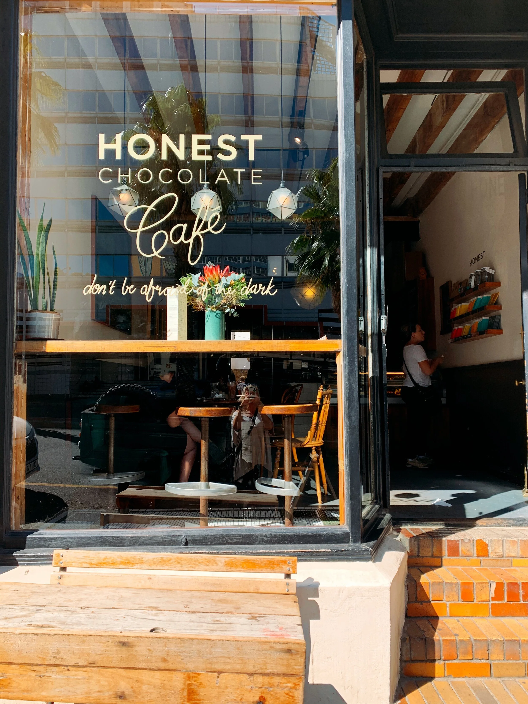
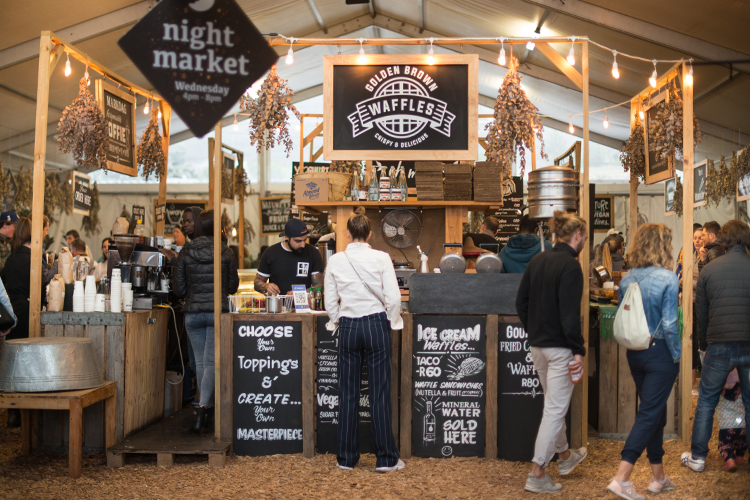
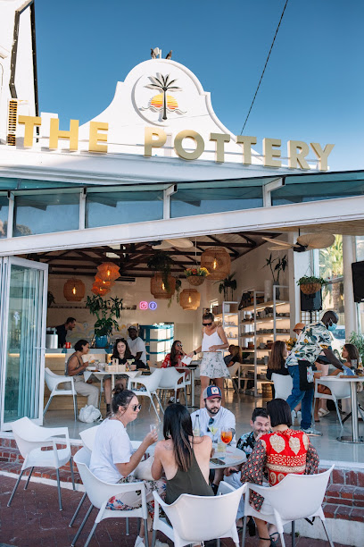

Why Cape Town?
The Mother City
Known for its stunning natural beauty, including Table Mountain, diverse landscapes, and beaches; its rich history and culture, highlighted by sites like Robben Island; and its vibrant food, wine, and wildlife experiences.
The city offers a unique blend of experiences ranging from city life and shopping to nature and adventure
CAFÉS
My favorite cafés in Cape Town

Honest Chocolate Café
A cozy, artisan chocolate hideaway in downtown Cape Town, where ethically sourced, bean-to-bar chocolate meets warm coffees, decadent hot chocolates, and vegan-friendly treats — all enjoyed in a charming original-building courtyard.
Address:
Shop 3, 63 Kloof St, Gardens, Cape Town, 8001
What I like about it
Their hot chocolate is pure, intense, and made from real 70% dark chocolate — it never feels artificial. Add to that the laid-back courtyard vibe and the option of vegan marshmallows, and it’s the sweetest little escape in the city.

The Oranjezicht City Farm & Market
The Oranjezicht City Farm & Market is a vibrant, community-driven farmers’ market located by the V&A Waterfront in Cape Town. Supporting over 40 local farmers and 80 artisans, it offers fresh organic produce, baked goods, free-range eggs, flowers, and ready-to-eat food in a lively, eco-conscious setting.
Address:
Haul Road, Granger Bay Blvd, Victoria & Alfred Waterfront, Cape Town, 8001, South Africa
What I like about it
The bustling atmosphere, fresh farm produce, and incredible ready-to-eat food stalls make every visit feel wholesome and energizing.

The Pottery
The Pottery in Camps Bay is a laid-back seaside cafe and creative studio where you can sip smoothies or cocktails, paint your own handcrafted Wonki Ware™, and enjoy simple but delicious food like wraps, pizzas and waffles — all in a warm, family-run atmosphere.
Address:
41 The Dr, Camps Bay, Cape Town, 8005, South Africa
What I like about it
Painting your own pottery while sipping on a fruity smoothie or glass of wine makes for a relaxing and creative escape — it’s the perfect spot to unwind and let your artistic side shine.